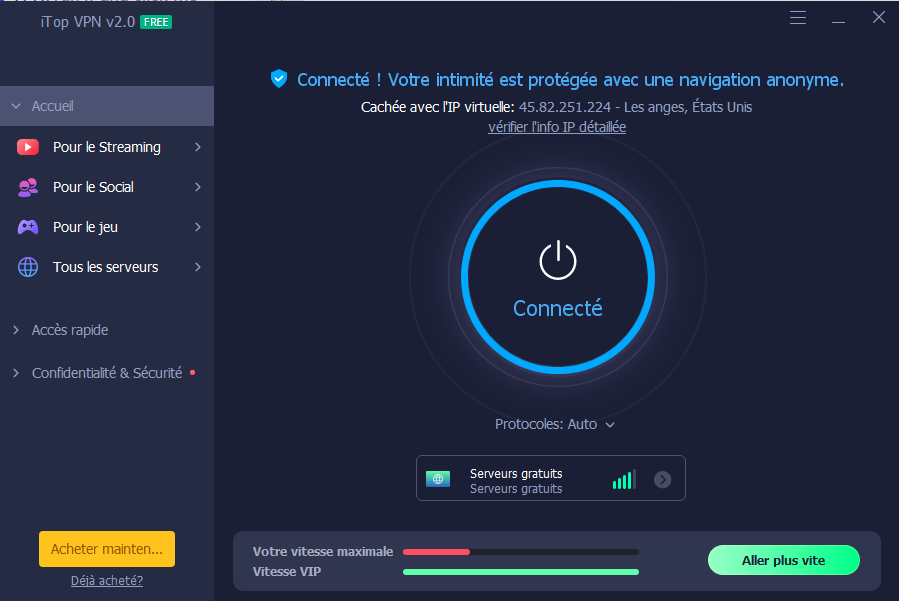

Introduction
Les réseaux privés virtuels, ou VPN, sont devenus des outils incontournables pour assurer la confidentialité et la sécurité des données en ligne. Parmi les nombreux fournisseurs de VPN, OpenVPN, CyberGhost VPN, NordVPN et ExpressVPN sont des choix populaires offrant diverses fonctionnalités. Examions brièvement chacun d'eux.
OpenVPN se distingue en tant que solution open source, offrant une flexibilité et une transparence accrues. Grâce à son protocole sécurisé, il est largement utilisé pour établir des connexions VPN fiables et cryptées. OpenVPN est apprécié pour sa capacité à fonctionner sur divers systèmes d'exploitation, mais sa configuration peut nécessiter une certaine expertise technique.
ExpressVPN se distingue par sa vitesse et sa stabilité, en faisant un choix optimal pour les utilisateurs axés sur la performance. Avec une présence mondiale étendue, il offre une navigation fluide et sécurisée. ExpressVPN est également salué pour son engagement envers la confidentialité, grâce à sa politique de non-journalisation et à son siège dans un endroit favorable à la vie privée.
NordVPN est réputé pour son engagement envers la confidentialité. Offrant un grand nombre de serveurs dans le monde entier, NordVPN propose des fonctionnalités telles que la double VPN et la protection contre les fuites IPv6. Son interface conviviale et ses politiques strictes de non-journalisation renforcent sa réputation en tant que fournisseur de VPN robuste.
CyberGhost VPN se positionne comme une option conviviale, adaptée aux utilisateurs débutants. Avec des serveurs répartis dans de nombreux pays, il propose une expérience de navigation anonyme. Ses fonctionnalités de sécurité avancées, telles que le blocage des publicités et la protection contre les fuites DNS, en font un choix attractif pour ceux qui privilégient la simplicité d'utilisation.
Conclusion
Le choix entre OpenVPN, CyberGhost VPN, NordVPN et ExpressVPN dépend des besoins individuels. OpenVPN séduit par sa nature open source, tandis que CyberGhost VPN se distingue par sa convivialité. NordVPN est plébiscité pour son engagement envers la confidentialité, et ExpressVPN excelle dans la vitesse et la stabilité. Quel que soit le choix, l'utilisation d'un VPN demeure essentielle pour renforcer la sécurité et la confidentialité en ligne.